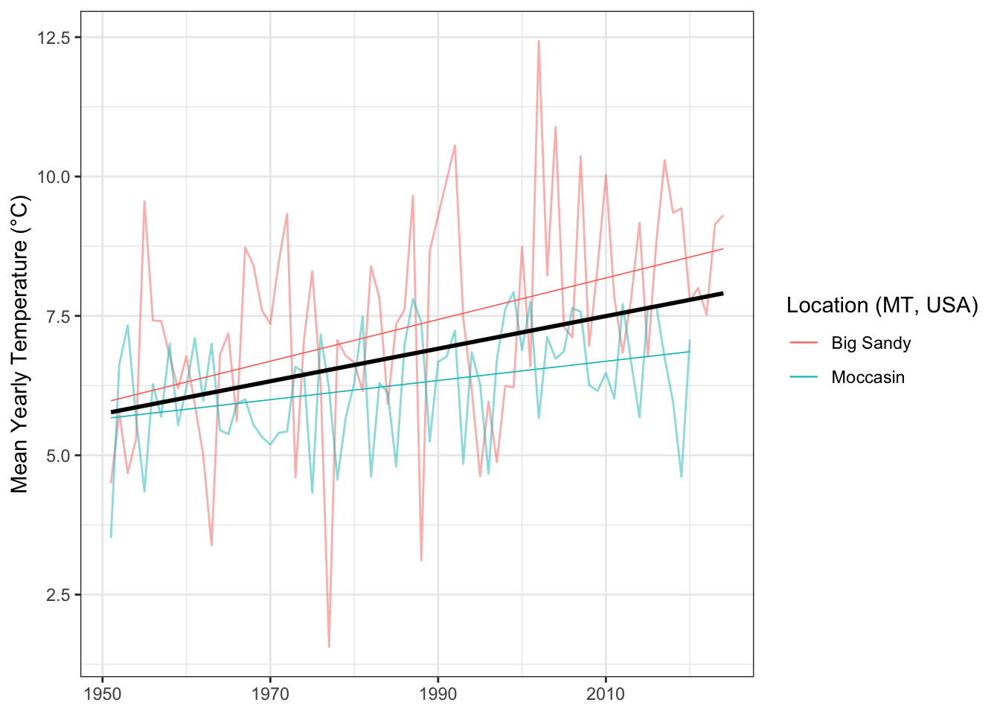

Ecological Importance of Smooth Brome in Managing Wheat Stem Sawfly (Hymenoptera: Cephidae) via Its Associated Braconid Parasitoids
This document can be downloaded as either a .docx or .pdf document. Please be aware that conversion may cause the formatting to be altered.
Abstract
Introduction
Ecologists and farmers frequently hold divergent views regarding the importance of natural habitats within agricultural landscapes, a distinction often overlooked in ecological and conservation discourse (Tscharntke et al. 2016). While ecologists recognize the role of natural habitats in supporting biodiversity and providing potential ecosystem services like biological pest control, many farmers perceive these habitat remnants as occupying valuable cropland or even as sources of pests. As such, documenting how pest and natural enemy populations interact with agricultural landscapes alongside natural habitat buffers is important in determining the degree of the services or disservices provided.
Numerous polyphagous insect herbivores and their natural enemies rely on a variety of resources found across diverse habitat types within their environment. Depending upon the quality of the resource, different habitat types can serve as sources for increased pest or natural enemy populations. Similarly, habitat types can serve as sinks for decreased populations (Kennedy and Storer 2000). Altering the presence of these resources can have impacts on pest or natural enemy populations and can alter the ecology between the examined species. For example, diversifying the edge cropping of organic Kale (Brassica oleracea) using fava beans, fennel, and marigolds results in a diversity in beneficial arthropod communities that help reduce phytophagous herbivory (Morais et al. 2023).
Understanding the ways in which landscape habitat diversity impacts the ecological relationship between pest and enemy is crucial for effectively managing pest species in large scale cropping systems. Similarly, understanding how herbivore plant-hosts act as reservoirs for pests or beneficial natural enemies can potentially play a role in stabilizing year-over-year agricultural impact from these pests (Cano et al. 2022).
The wheat stem sawfly (WSS), Hymenoptera Cephus cinctus Norton, is a grass-mining sawfly native to North America (Lesieur et al. 2016). Originally adept at utilizing wild grass hosts, the species became a major pest to cultivated cereals as the practice became more prevalent following European settlement, becoming a notable pest of winter wheat in 1990 (W. L. Morrill and Kushnak 1996). Adult female WSS use their saw-like ovipositor to lay their eggs in the lumen of stems, where the eggs hatch, leading to larval feeding of parenchyma tissue (Holmes and Farstad 1956). Economic damage manifests in the form of both kernel weight reduction caused by tissue damage (Beres et al. 2011) and stem toppling due to late-season larval girdling (Holmes and Peterson 1960).
Several parsitoid species attack C. cinctus within wild grass hosts (Davis, Benton, and Somsen 1955; Wendell L. Morrill, Kushnak, and Gabor 1998), however, two species, Bracon cephis (Gahan) and Bracon lissogaster Muesebeck (Hymenoptera: Braconidae), have been observed targeting WSS within cultivated cereals (Nelson and Farstad 1953; Wendell L. Morrill, Kushnak, and Gabor 1998). These two host-specific ectoparasitoids are native to North America. Both parasitoids are bivoltine, with the first generation present in Montana from late June to late July, while the second generation is active in August and September (Somsen and Luginbill 1956). Adult female B. cephi and B. lissogaster paralyze C. cinctus larvae within the host stem, paralyze the host larvae, and depositing 1 (B. cephi) to three (B. lissogaster) eggs. B. cephi and B. lissogaster have been shown to provide biological control via irreplaceable mortality of C. cinctus populations (Buteler et al. 2015) and can significantly reduce C. cinctus damage and impact on crop yields (Buteler, Weaver, and Miller 2008; Tatyana A. Rand, Richmond, and Dougherty 2020). While C. cinctus has a wide range of viable host plants, including native and non-native grasses and cultivated row-crops such as wheat (Triticum aestivum L.) and barley (Hordeum vulgare)(Wallace and McNeal 1966; Cockrell et al. 2017), infestation levels can vary widely across hosts. Previous research has shown preference for host plants with larger stem diameter (Ainslie 1920; Bhandari 2020).
Previous research has shown natural non-cultivated grasses such as Agropyron cristatum, B. inermis, Elymus trachycaulus, and Elytrigia intermedium host C. cinctus and Bracon spp. parasitoids quite well (Peirce et al. 2021; Tatyana A. Rand, Kula, and Gaskin 2024). We find investigating B. inermis holds the most potential, as it has been shown to be a quality host for C. cinctus while also leading to high larval mortality (Farstad and Jacobson 1945). However, there is a lack of refined data relating to the total infestation, cutting, and parasitization within B. inermis at multiple time points throughout the growing season. Quantificative assessment of potential ‘reservoire’ characteristics and local spatial information could prove useful in fully understanding the ecological impacts of maintaining B. inermis along roadways and within coulles.
Smooth brome (Bromus inermis Lyess) is a Eurasian cool-season rhizomatous grass introduced to the United States in 1884 (Salesman and Jessica 2011).B. inermis was originally thought of as potentially useful as a trap crop in order to combat the growing WSS problem with cultural control practices (Farstad and Jacobson 1945). Due to its low agricultural value, and propensity to form monocultures and out compete many native grasses, B. inermis is categorized as invasive (Carlson and Newell 1985; Willson and Stubbendieck 2000; Dillemuth, Rietschier, and Cronin 2008). However, B. inermis still holds immense ecological value in its late senescence and WSS antibiosis properties (Otfinowski, Kenkel, and Catling 2006; Tatyana A. Rand, Kula, and Gaskin 2024).
Montana’s golden triangle, an area of central and northern Montana with intense cereal grain production, is prone to drought and burning via wildfire (Wilson 1923). As both C. cinctus and its host-specific parasitoids are relatively restricted in their annual mobility (Weaver et al. 2005), environmental extremes can have broad impacts on both local pest and natural enemy populations. As with many predator-prey interactions, the C. cinctus and parasitoid populations fluctuate, with crashes and spikes experienced in close succession. Similar examples can be found in wolves and moose on Isle Royale (Peterson 1999), and Coccinelidae and aphids (Evans 1999).
We examined historical weather data from our field sites in central and northern Montana. We used this data to understand how changes in global climate trends may be impacting B. cephis and B. inermis populations. In addition we analyzed normalized difference vegetative index (NDVI) at our field sites to understand how B. inermis senescence patterns compare to adjacent cultivated wheat.
In this study, we explored the ecological patterns between Montana populations of C. cinctus and its braconid parsitoids in relation to B. inermis host sites. Our goal, was 1) to understand the degree to which C. cinctus infested B. inermis stems in relation to neighboring cereal crops, and 2) the way in which braconid parasitoids utilized WSS hosts within B. inermis stems. To do so, we conducted two separate studies. In our first study, we conducted controlled C. cinctus infestation of B. inermis to understand the relative infestation and cutting rate of C. cinctus within the B. inermis stems. The second study examined rates of cutting and parasitism at field sites in central and northern Montana.
Using these studies, we addressed three questions, 1) what is the total cutting, and thus source rate, of C. cinctus from B. inermis, 2) can C. cinctus larvae within B. inermis serve as second generation hosts for B. cephi and B. lissogaster, and 3) how do C. cinctus and parasitoid populations in B. inermis compare with those in adjacent cultivated wheat fields.
Materials and Methods
Weather data and NDVI analysis
Weather data. We assessed the long and medium term temperature and precipitation trends of our field sites using weather data from the National Oceanic and Atmospheric Administration (NOAA, Silver Spring, MA, USA). Data for each field site was averaged from three of the closest weather stations to that location. Data was plotted using R Studio (R Studio version 2024.04.0+735, R 2024) package ‘ggplot’ (version 3.4.4) (Wickham 2016). Data was then fit using a linear model using the ‘lm’ command using average yearly precipitation (inches) as the response variable and year as the predictor.
NDVI analysis. We compared the relative greening throughout the growing season between wheat fields and adjacent B. inermis using the normalized difference vegetation index (NDVI). NDVI is typically used to assess vegetation health and density, and is calculated from the visible and near-infared light reflected by vegetation (Pettorelli et al. 2005). Data was downloaded using Google Earth Engine (Google Inc. 2023, Mountain View, CA, USA).
Controlled C. cinctus infestation of B. inermis
Insects and Cages. Assessment of C. cinctus infestation and mortality within B. inermis were assessed using a 34 x 60 ft plot at the Arthur H. Post Agronomy Farm (43°38’19.39”N, 116°14’28.86”W), an extension research station of Montana State University in Bozeman, MT. The cage structure was built using 1-inch PVC piping with the netting made using 530\(\mu\) Amber Lumite Screen (BioQuip\(^\circledR\) Products, LLC). Twelve cages were built to dimensions of 6ft x 3ft x 3ft (L x W x H) with cage locations selected randomly based on the space available within the plot and arranged in sets of three.
Wheat stem stubble was collected in Three Forks, MT, USA (43°38’19.39”N, 116°14’28.86”W) from fields that experienced high levels of C. cinctus infestation and cutting the year prior. Cut stubble, which contained C. cinctus larvae in diapause, were kept refrigerated between -2°C and 3°C for >100 days as required to complete obligatory larval diapause. As needed, stubs were removed from refrigeration and kept at 22-27°C for 4-5 weeks inside of 100 oz GladWare® storage containers (Glad®, Oakland, California USA). Once B. inermis stems reached six inches tall, stub containers with emerging sawflies were added to cages to mimic sawfly infestation pressure. Sawfly quantity treatments were as follows: high (600 stubs), low (200 stubs), and control (0 stubs).
Data Collection. In late August, B. inermis stems were collected from each cage. Each stem was sliced open using X-Acto® knives to collect data on infestation, dead larvae, live larvae, and parasitism at each internode.
Montana Field Survey
Stem collection and processing. We conducted a field survey to assess C. cinctus infestation, larval mortality, and B. cephi and B. lissogaster prevalence within B. inermis and adjacent wheat fields. Sites were chosen across 2 counties in north-central Montana, United States. (Chouteau, Judith Basin), which consistently experience high C. cinctus pressure. Samples were collected from wheat fields and adjacent B. inermis in early July and late August in 2021, 2022, and 2023 from sites in Big Sandy, Moccasin, and Amsterdam, MT, USA. Sampling sites were set up as 100\(m^2\) polygons along the edge of adjoining wheat fields. Four collection squares of 1ft x 1ft were randomly selected within each polygon during both collection events each year. All stems within each 1 x 1 ft square were collected using a shovel to remove both stem and root material. Wheat stems were collected at distances of 5 and 20 meters from the edge of the field. Samples were collected in 4 rows at 10 meters apart. 2 samples were collected in each row at distances of 5 and 20 meters. 1 ft samples were collected at each point.
Wheat and B. inermis stems were then returned to Montana State University, Bozeman, Montana and stored in a 10°C cold wet storage until dissection. Stems were dissected lengthwise with a fine-bladed scalpel to determine presence or absence of C. cinctus larvae infestation, live eggs, dead eggs, dead larvae, live larvae, parasitism, and cutting. Sawfly larvae were identified based on descriptions in Criddle (1915) and Wallace and McNeal (1996).
Statistical Analysis. We used generalized linear mixed models with binomial errors (logit link) fit using bound optimization by quadratic approximation, with a maximum of 200,000 iterations, were run in the lme4 package in R (Bates, Bolker, and Walker 2015) to examine the effects of location and year (fixed effects) on each of the three response variables: proportion of stems infested, proportion of stems cut, and proportion os stems parasitized by Bracon spp. ’
To better understand the density of Bracon spp. within the wheat and B. inermis sampling sites, we converted our units to the ratio of parasitoids to stem per unit area. Densities of stems are different when considering B. inermis and cultivated wheat or barley. Using this conversion, we attempted to better understand how the density of parasitoids (and WSS) is changed by looking at each kind of plant.
Results
Historical Weather Analysis & NDVI
We observed a significant linear relationship (r = 0.1, P = 0.033, estimate = -0.058) between average precipitation and year for both Big Sandy and Moccasin, Montana. This means that for each one year increase, we are seeing a decrease in 0.05 inches of precipitation. (Fig. 1). Additionally, we observed a significant positive linear relationship (r = 0.245, P < 0.05, estimate = 0.028) between year and average yearly temperature for Moccasin and Big Sandy, MT. This means that each year, the average daily temperature has increased by 0.03°C. (Fig. 2).
We observed a notable difference in NDVI when comparing adjacent B. inermis and spring wheat. We saw a significant difference in the July NDVI (0.846, P < 0.05). The B. inermis NDVI remained relatively linear in it’s downslope (BROME SLOPE POST JULY) compared to the wheat field (WHEAT FIELD POST JULY). (Fig. 3)
Need to add map showing where NDVI measurments came from
Controlled C. cinctus Infestation of B. inermis
C. cinctus showed high infestation of B. inermis in the controlled test conditions. Averaged across both years, we observed 66.5% of stems infested for high treatments and 47.3% of stems for low treatments. We found strong evidence suggesting that there was a significant difference between infestation at high and low treatment levels when holding year constant (r = 0.83, P < 0.05, Fig. 3).
Cutting was observed at 5.7% for the high treatments and 3.9% for the low, showing strong evidence for a difference in cutting between high and low treatment groups (r = 0.592, P < 0.05).
C. cinctus infested stems often contained larvae burrowing through multiple nodes. In 2022, 64.3% of stems were observed to have at least 4 nodes burrowed through. In 2023, 61.7% of stems had at least 4 nodes infested Fig. 5
Montana Field Sites
We quantified C. cinctus and Bracon spp. parasitoid presence in 6,148 wheat and grass stems across 10 research sites in 2022 and 2023. Infestation by C. cinctus within B. inermis varied between collection sites, with the greatest infestation taking place within our three Big Sandy, MT sampling sites (2023: 65.4%, 2022: 63.1%), while the lowest infestation observed was in Moccasin, MT (2023: 40.8%, 2022: 60.7%). Across all sites in Big Sandy and Moccasin, we observed an average infestation of 57.5% within B. inermis and 47.6% within the adjacent wheat. Cutting by C. cintus was observed at an average rate of 5.59% (se = 0.0164) in B. inermis and 47.1% (se = 0.0386) in the adjacent cultivated wheat (fig. 7.
To generate a relative estimate of the number of available C. cinctus host larvae within B. inermis late in the growing season, we calculated the number of stems that contained at least four or more nodes of infestation. In Big Sandy, 76.2% of collected stems in the fall exhibited at least 4 nodes of infestation. In Moccasin, the corresponding figure was 66.5%.
We utilized the ratio of parasitized stems to cut stems to better understand the true impact of our B. inermis sink/source ecology. The largest ratio observed was in Big Sandy, MT in the fall of 2022, where we observed a ratio of 16 parasitoids to 1 cut stem. This means that for every 1 square meter of B. inermis, we would observe 16 stems that produced a parasitoid for every 1 stem that produced an adult C. cinctus. All three other sample selections also showed positive ratios of parasitoids to cut stems fig. 8.
I want to drive home that stems with 3 + nodes infested likely had larave that were alive late into the summer. Compare the number of nodes infested in the summer to stems that have 3+ infested in the fall.
Discussion
Assessing the comparative abundance of C. cinctus and its associated parasitiods within B. inermis and adjacent cultivated cereal hosts is an important initial step in evaluating whether semi-natural environments within road-side or coulee areas could potentially serve as origins for both pests and beneficial natural adversaries infiltrating agricultural crops.
Figures
Figure 1
Figure 2

Figure 3

Figure 4
Figure 5

Figure 6

Figure 7
Figure 8

Citations
Ainslie, C. N. 1920. “The Western Grass-Stem Sawfly.” United States Department of Agriculture.
Bates, MM Douglas, Ben Bolker, and Steve Walker. 2015. “Fitting Linear Mixed-Effects Models Using Lme4.” Journal of Statistical Software 67: 1–48.
Beres, B. L., L. M. Dosdall, D. K. Weaver, H. A. Cárcamo, and D. M. Spaner. 2011. “Biology and Integrated Management of Wheat Stem Sawfly and the Need for Continuing Research.” Canadian Entomologist 143: 105–25. https://doi.org/10.4039/n10-056.
Bhandari, Rekha. 2020. “Assessment of Host Selection Behaviors and Oviposition Preferences of Cephus Cinctus Norton (Hymenoptera: Cephidae) Using Wheat and Smooth Brome.”
Buteler, Micaela, Robert K. D. Peterson, Megan L. Hofland, and David K. Weaver. 2015. “A Multiple Decrement Life Table Reveals That Host Plant Resistance and Parasitism Are Major Causes of Mortality for the Wheat Stem Sawfly.” Environmental Entomology 44: 1571–80. https://doi.org/10.1093/ee/nvv128.
Buteler, Micaela, David K. Weaver, and Perry R. Miller. 2008. “Wheat Stem Sawfly-Infested Plants Benefit from Parasitism of the Herbivorous Larvae.” Agricultural and Forest Entomology 10 (November): 347–54. https://doi.org/10.1111/j.1461-9563.2008.00396.x.
Cano, Domingo, Carlos Martínez-Núñez, Antonio J. Pérez, Teresa Salido, and Pedro J. Rey. 2022. “Small Floral Patches Are Resistant Reservoirs of Wild Floral Visitor Insects and the Pollination Service in Agricultural Landscapes.” Biological Conservation 276 (December). https://doi.org/10.1016/j.biocon.2022.109789.
Carlson, I T, and L C Newell. 1985. “Smooth Bromegrass.” In Forages: The Science of Grassland Agriculture, 198–206. Iowa State University. https://www.cabdirect.org/cabdirect/abstract/19850777665.
Cockrell, Darren M., Robert J. Griffin-Nolan, Tatyana A. Rand, Nuha Altilmisani, Paul J. Ode, and Frank Peairs. 2017. “Host Plants of the Wheat Stem Sawfly (Hymenoptera: Cephidae).” Environmental Entomology. Entomological Society of America. https://doi.org/10.1093/ee/nvx104.
Davis, E. G., Curtis Benton, and H. W. Somsen. 1955. “Natural Enemies of the Wheat Stem Sawfly in North Dakota and Montana.” North Dakota Agricultural Experimental Bimonthly Bulletin 18: 63–65.
Dillemuth, Forrest P., Erick A. Rietschier, and James T. Cronin. 2008. “Patch Dynamics of a Native Grass in Relation to the Spread of Invasive Smooth Brome (Bromus Inermis).” Biological Invasions 2008 11:6 11 (September): 1381–91. https://doi.org/10.1007/S10530-008-9346-7.
Evans, Edward W. 1999. Intra Versus Interspecific Interactions of Ladybeetles (Coleoptera: Coccinellidae) Attacking Aphids. Oecologia. Vol. 87.
Farstad, C. W., and L. Jacobson. 1945. “Manual for Sawfly Control Workers in Alberta.” Canadian Department of Agriculture - Division of Entomology.
Holmes, N. D., and C. W. Farstad. 1956. “Effects of Field Exposure on Immature Stages of the Wheat Stem Sawfly, Cephus Cinctus Nort. (Hymenoptera: Cephidae).” Canadian Journal of Agricultural Science 36: 196–202. https://cdnsciencepub.com/doi/abs/10.4141/agsci-1956-0023.
Holmes, N. D., and L. K. Peterson. 1960. “THE INFLUENCE OF THE HOST ON OVIPOSITION BY THE WHEAT STEM SAWFLY, CEPHUS CINCTUS NORT. (HYMENOPTERA: CEPHIDAE).” Canadian Journal of Plant Science 40 (January): 29–46. https://doi.org/10.4141/cjps60-004.
Kennedy, George G., and Nicholas P. Storer. 2000. “Life Systems of Polyphagous Arthropod Pests in Temporally Unstable Cropping Systems.” Annual Review of Entomology 45: 467–93.
Lesieur, Vincent, Jean François Martin, David K. Weaver, Kim A. Hoelmer, David R. Smith, Wendell L. Morrill, Nassera Kadiri, et al. 2016. “Phylogeography of the Wheat Stem Sawfly, Cephus Cinctus Norton (Hymenoptera: Cephidae): Implications for Pest Management.” PLoS ONE 11 (December): 168370. https://doi.org/10.1371/journal.pone.0168370.
Morais, Rosana Matos De, Alexssandro de Freitas De Morais, Vicente Guilherme Handte, Artur Fernando Poffo Costa, Cleber Witt Saldanha, Gerusa Pauli Kist Steffen, Evandro Luiz Missio, Joseila Maldaner, and Benjamin Dias Osorio Filho. 2023. “Enhancing Arthropod Communities Through Plant Diversified Edge of Kale Cultivation.” Pesquisa Agropecuária Gaúcha 29 (August): 77–91. https://doi.org/10.36812/pag.202329177-91.
Morrill, W. L., and Gregory D. Kushnak. 1996. “Wheat Stem Sawfly (Hymenoptera: Cephidae) Adaptation to Winter Wheat.” Environmental Entomology 25 (October): 1128–32. https://doi.org/10.1093/EE/25.5.1128.
Morrill, Wendell L., Gregory D. Kushnak, and James W. Gabor. 1998. “Parasitism of the Wheat Stem Sawfly (Hymenoptera: Cephidae) in Montana.” Biological Control 12: 159–63. https://doi.org/10.1006/bcon.1998.0629.
Nelson, W. A., and C. W. Farstad. 1953. “Biology of Bracon Cephi (Gahan) (Hymenoptera: Braconidae), an Important Native Parasite of the Wheat Stem Sawfly, Cephus Cinctus Nort. (Hymenoptera: Cephidae), in Western Canada.” The Canadian Entomologist 85: 103–7. https://doi.org/10.4039/Ent85103-3.
Otfinowski, R, N C Kenkel, and P M Catling. 2006. “The Biology of Canadian Weeds. 134. Bromus Inermis Leyss.” Canadian Journal of Plant Science 87: 183–98.
Peirce, Erika S., Tatyana A. Rand, Darren M. Cockrell, Paul J. Ode, and Frank B. Peairs. 2021. “Effects of Landscape Composition on Wheat Stem Sawfly (Hymenoptera: Cephidae) and Its Associated Braconid Parasitoids.” Journal of Economic Entomology 114 (February): 72–81. https://doi.org/10.1093/jee/toaa287.
Peterson, Rolf O. 1999. “Wolf-Moose Interaction on Isle Royale: The End of Natural Regulation.” Ecological Applications. Ecological Society of America. https://doi.org/10.1890/1051-0761(1999)009[0010:WMIOIR]2.0.CO;2.
Pettorelli, Nathalie, Jon Olav Vik, Atle Mysterud, Jean Michel Gaillard, Compton J. Tucker, and Nils Chr Stenseth. 2005. “Using the Satellite-Derived NDVI to Assess Ecological Responses to Environmental Change.” Trends in Ecology and Evolution. https://doi.org/10.1016/j.tree.2005.05.011.
Rand, Tatyana A, Robert R Kula, and John F Gaskin. 2024. “Evaluating the Use of Common Grasses by the Wheat Stem Sawfly (Hymenoptera: Cephidae) and Its Native Parasitoids in Rangeland and Conservation Reserve Program Grasslands.” Edited by Tong-Xian Liu. Journal of Economic Entomology, March. https://doi.org/10.1093/jee/toae046.
Rand, Tatyana A., Courtney E. Richmond, and Edward T. Dougherty. 2020. “Modeling the Combined Impacts of Host Plant Resistance and Biological Control on the Population Dynamics of a Major Pest of Wheat.” Pest Management Science 76 (August): 2818–28. https://doi.org/10.1002/ps.5830.
Salesman, Jessica Bolwahn, and Meredith Thomsen Jessica. 2011. “Smooth Brome (Bromus Inermis) in Tallgrass Prairies: A Review of Control Methods and Future Research Directions.” Ecological Restoration 29: 374–81. https://doi.org/10.3368/er.29.4.374.
Somsen, H. W., and P Luginbill. 1956. “Bracon Lissogaster Mues: A Parasite of the Wheat Stem Sawfly.” USDA Technical Bullitin 1153. https://www.google.com/books/edition/Bracon_Lissogaster_Mues/37UXAAAAYAAJ?hl=en&gbpv=1&dq=Bracon+Lissogaster+Mues:+A+Parasite+of+the+Wheat+Stem+Sawfly.&pg=PA29&printsec=frontcover.
Tscharntke, Teja, Daniel S. Karp, Rebecca Chaplin-Kramer, Péter Batáry, Fabrice DeClerck, Claudio Gratton, Lauren Hunt, et al. 2016. “When Natural Habitat Fails to Enhance Biological Pest Control – Five Hypotheses.” Biological Conservation. Elsevier Ltd. https://doi.org/10.1016/j.biocon.2016.10.001.
Wallace, Lew E., and F. H. McNeal. 1966. “Stem Sawflies of Economic Importance in Grain Crops in the United States.” U.S. Department of Agriculture Technical Bulletin No. 1350. https://books.google.com/books?hl=en&lr=&id=dcMXAAAAYAAJ&oi=fnd&pg=PA1&dq=Stem+sawflies+of+economic+importance+in+grain+crops+in+the+United+States&ots=e0FbKZOb6x&sig=_fPd1FCRZ_HK-Ncv2POX-EFMvOo#v=onepage&q=Stem sawflies of economic importance in grain cro.
Weaver, David K., Christian Nansen, Justin B. Runyon, Sharlene E. Sing, and Wendell L. Morrill. 2005. “Spatial Distributions of Cephus Cinctus Norton (Hymenoptera: Cephidae) and Its Braconid Parasitoids in Montana Wheat Fields.” Biological Control 34 (July): 1–11. https://doi.org/10.1016/j.biocontrol.2005.04.001.
Wickham, Hadley. 2016. “Ggplot2: Elegant Graphics for Data Analysis.” Springer-Verlang New York. https://ggplot2.tidyverse.org.
Willson, Gary D., and James Stubbendieck. 2000. “A Provisional Model for Smooth Brome Management in Degraded Tallgrass Prairie.” Ecological Restoration. https://doi.org/10.3368/er.18.1.34.
Wilson, M. L. 1923. Dry Farming in the North Central Montana Triangle. Edited by R. B. Bowden.